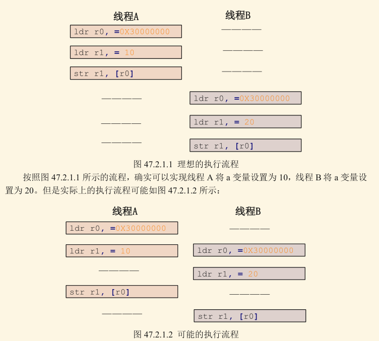
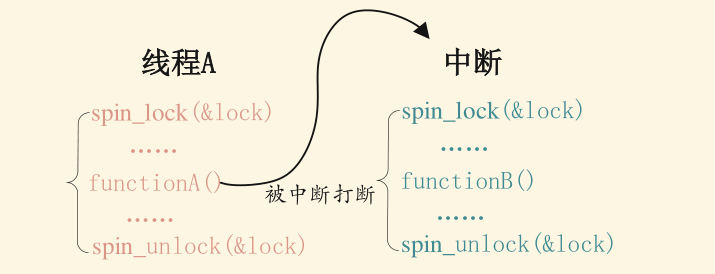

本篇参考
- 【正点原子】I.MX6U嵌入式Linux驱动开发指南V1.81
- 一文读懂Linux内核中的并发和竞争 - 知乎 作者：Linux嵌入式
1. 内核中的并发和竞争简介
在早期的 Linux内核中，并发的来源相对较少。早期内核不支持对称多处理（ symmetric multi processing,SMP），因此，导致并发执行的唯一原因是对硬件中断的服务。这种情况处理起来较为简单，但并不适用于为获得更好的性能而使用更多处理器且强调快速响应事件的系统。
为了响应现代硬件和应用程序的需求， Linux内核已经发展到同时处理更多事情的时代。Linux系统是个多任务操作系统，会存在多个任务同时访问同一片内存区域的情况，这些任务可能会相互覆盖这段内存中的数据，造成内存数据混乱。针对这个问题必须要做处理，严重的话可能会导致系统崩溃。现在的 Linux系统并发产生的原因很复杂，总结一下有下面几个主要原因：
-
多线程并发访问:
Linux是多任务（线程）的系统，所以多线程访问是最基本的原因。 -
抢占式并发访问：
内核代码是可抢占的，因此，我们的驱动程序代码可能在任何时候丢失对处理器的独占 -
中断程序并发访问：
设备中断是异步事件，也会导致代码的并发执行。 -
SMP（多核）核间并发访问：
现在ARM架构的多核SOC很常见，多核CPU存在核间并发访问。正在运行的多个用户空间进程可能以一种令人惊讶的组合方式访问我们的代码，SMP系统甚至可在不同的处理器上同时执行我们的代码。
对于并发问题的处理方法，我们现在就来介绍最基础的四种。
2. 原子操作
2.1. 原子操作简介
原子，在早接触到是在化学概念中。原子指化学反应不可再分的基本微粒。同样的，在内核中所说的原子操作表示这一个访问是一个步骤，必须一次性执行完，不能被打断，不能再进行拆分。 例如，在多线程访问中，我们的线程一对a进行赋值操作，a=10，线程二也对a进行赋值操作a=20，我们理想的执行顺序是线程一先执行，线程二再执行。但是很有可能在线程一执行的时候被其他操作打断，使得线程一最后的执行结果变为a=20。要解决这个问题，必须保证我们的线程一在对数据访问的过程中不能被其他的操作打断，一次性执行完成。

Linux 内核定义了叫做 atomic_t 的结构体来完成整形数据的原子操作，在使用中用原子变量来代替整形变量，此结构体定义在 include/linux/types.h 文件中，定义如下：
typedef struct {
int counter;
} atomic_t;如果要使用原子操作 API 函数，首先要先定义一个 atomic_t 的变量，如下所示：
atomic_t a; //定义 a也可以在定义原子变量的时候给原子变量赋初值，如下所示：
atomic_t b = ATOMIC_INIT(0); //定义原子变量 b 并赋初值为 02.2. 原子操作相关API
2.2.1. 整型原子操作API
| 函数 | 描述 |
|---|---|
ATOMIC_INIT(int i) |
定义原子变量的时候对其初始化。 |
int atomic_read(atomic_t*v) |
读取 v的值，并且返回 |
void atomic_set(atomic_t *v, int i) |
向 v写入 i值。 |
void atomic_add(int i, atomic_t *v) |
给 v加上 i值。 |
void atomic_sub(int i, atomic_t *v) |
从 v减去 i值。 |
void atomic_inc(atomic_t *v) |
给 v加 1，也就是自增。 |
void atomic_dec(atomic_t *v) |
从 v减 1，也就是自减 。 |
int atomic_dec_return(atomic_t *v) |
从 v减 1，并且返回v的值 。 |
int atomic_inc_return(atomic_t *v) |
给 v加 1，并且返回 v的值。 |
int atomic_sub_and_test(int i, atomic_t *v) |
从 v减 i，如果结果为0就返回真，否则就返回假 |
int atomic_dec_and_test(atomic_t *v) |
从 v减 1，如果结果为0就返回真，否则就返回假 |
int atomic_inc_and_test(atomic_t *v) |
给 v加 1，如果结果为0就返回真，否则就返回假 |
int atomic_add_negative(int i, atomic_t *v) |
给 v加 i，如果结果为负就返回真，否则返回假 |
int atomic_cmpxchg(atomic_t *v, int old, int new) |
看 v指向的值是不是 old，如果是，就把它改成 new。否则不改。总是返回v指向的未修改的原始值。 |
64位的整型原子操作只是将“atomic_”前缀换成“atomic64_”，将int换成long long。
2.2.2. 位原子操作相关API
| 函数 | 描述 |
|---|---|
void set_bit(int nr, void *p) |
将p地址的nr位置1 |
void clear_bit(int nr,void *p) |
将p地址的nr位清零 |
void change_bit(int nr, void *p) |
将p地址的nr位反转 |
int test_bit(int nr, void *p) |
获取p地址的nr位的值 |
int test_and_set_bit(int nr, void *p) |
将p地址的nr位置1，并且返回nr位原来的值 |
int test_and_clear_bit(int nr, void *p) |
将p地址的nr位清0，并且返回nr位原来的值 |
int test_and_change_bit(int nr, void *p) |
将p地址的nr位翻转，并且返回nr位原来的值 |
2.3. 小实验1
- 实验目的：了解原子操作。
- 实验内容：实现led灯设备在同一时间只能由一个进程访问。
- 实验原理：
我们在led设备的数据结构体里添加一个标志位busy，该标志位反应该设备是否被占用，如果被占用则busy为1，否则为0。当我们在led的open函数中判断是否被占用以及设定标志位时，如果操作不是原子的，那么可能会出现这种情况：
1. ->进程a（第一个访问led）运行到判断语句成功进入未占用分支并准备赋值标志位为1
2. ->进程b打断进程a开始运行
3. ->进程b运行判断语句并赋值busy为1，占用该设备
4. ->进程a由于先前已进入未占用分支，则继续赋值标志位为1，占用该设备
为了杜绝这种事发生，我们必须保证判断、修改busy标志位这两个步骤是统一的、原子的，不能被打断。 - 实验步骤：
- 在led私有变量结构体(struct led_dev)中，定义原子变量busy
- 在led设备初始化函数中，初始化busy为0：
atomic_set() - 在led设备open函数中，判断、修改busy，这两个操作必须是连续的、不可被打断的：
atomic_cmpxchg() - 则led设备release函数中，重新置busy为0，代表解除占用
- 实验现象：当一个进程占用led设备时，另一个进程会无法打开该设备，然后退出。（可以自己编写一个程序open设备然后用sleep模拟占用几秒）
头文件：
#include <linux/kernel.h>
#include <linux/module.h>
#include <linux/init.h>
#include <linux/fs.h>
#include <linux/cdev.h>
#include <linux/string.h>
#include <linux/of.h>
#include <linux/of_gpio.h>
#include <linux/atomic.h>
#define DEV_NAME "led_atomic"参考代码，只展示了一些关键代码。
struct led_dev {
/*...含各种私有数据，略*/
atomic_t busy; //new: 原子变量
};
static struct led_dev* led;
static int led_open(struct inode *nd, struct file *fp)
{
struct led_dev* this_devp;
this_devp = container_of(nd->i_cdev, struct led_dev, cdev);
fp->private_data = this_devp;
/* atomic_cmpxchg(ptr, old, new):
* 看 ptr 指向的值是不是 old，如果是，就把它改成 new。
* 返回值：ptr指向的值的原始值。
* 如果busy=0，0=old，会将busy改成new值，返回原始值0
* 如果busy=1，1!=old，不会改值，返回原始值1
* busy!=0的情况：只能是被其他的进程置为1了
* busy=0的情况：没有进程占用这个设备，这种情况下会这个函数会将busy=1
*/
if(atomic_cmpxchg(&this_devp->busy, 0, 1) != 0)
{
printk(KERN_INFO "this dev is occupied by another guy.");
return -EBUSY;
}
return 0;
}
static int led_rel(struct inode *nd, struct file *fp)
{
struct led_dev* this_devp = fp->private_data;
/* 释放原子变量 */
atomic_set(&this_devp->busy, 0);
printk(KERN_INFO "release！ now busy = %d", atomic_read(&this_devp->busy));
return 0;
}
ssize_t led_read(struct file *, char __user *, size_t, loff_t *)
{
/*...略*/
}
static ssize_t led_write(struct file *fp, const char __user *buf, size_t cnt, loff_t *)
{
/*...略，含控制亮灭的逻辑*/
}
static struct file_operations led_fops = {
.open = led_open,
.release = led_rel,
.read = led_read,
.write = led_write
};
static int add_dev(void)
{
/*...添加字符设备的一般步骤，略*/
}
static __init int led_init(void)
{
int ret = 0;
// ！！！！在此处为我们的私有数据结构体分配内存！！！！否则指针指向NULL
led = kzalloc(sizeof(*led), GFP_KERNEL);
ret = add_dev();
if (ret != 0)
return ret;
/* 初始化原子变量为0 */
atomic_set(&led->busy, 0);
/*...含查找节点并申请gpio子系统控制gpio，略*/
return 0;
}
static __exit void led_exit(void)
{
/*...含各种释放，略*/
}
module_init(led_init);
module_exit(led_exit);
MODULE_LICENSE("GPL");
MODULE_AUTHOR("gdm");3. 自旋锁
3.1. 自旋锁简介
自旋锁，顾名思义，我们可以把他理解成厕所门上的一把锁。这个厕所门只有一把钥匙，当我们进去时，把钥匙取下来，进去后反锁。那么当第二个人想进来，必须等我们出去后才可以。当第二个人在外面等待时，可能会一直等待在门口转圈。
我们的自旋锁也是这样，自旋锁只有锁定和解锁两个状态。当我们进入拿上钥匙进入厕所，这就相当于自旋锁锁定的状态，期间谁也不可以进来。当第二个人想要进来，这相当于线程B想要访问这个共享资源但是目前不能访问，所以线程B就一直在原地等待，一直查询是否可以访问这个共享资源（占用CPU）。当我们从厕所出来后，这个时候就“解锁”了，只有再这个时候线程B才能访问。
假如，在厕所的人待的时间太长怎么办？外面的人一直等待吗？如果换做是我们，肯定不会这样，简直浪费时间，可能我们会寻找其他方法解决问题。自旋锁也是这样的，如果线程A持有自旋锁时间过长，显然会浪费处理器的时间，降低了系统性能。我们知道CPU最伟大的发明就在于多线程操作，这个时候让线程B在这里傻傻的不知道还要等待多久，显然是不合理的。因此，如果自旋锁只适合短期持有，如果遇到需要长时间持有的情况，我们就要换一种方式了（下文的互斥体）。
3.2. 自旋锁API
| 函数 | 描述 |
|---|---|
DEFINE_SPINLOCK(spinlock_t lock) |
定义并初始化一个自旋变量 |
int spin_lock_init(spinlock_t *lock) |
初始化自旋锁 |
void spin_lock(spinlock_t *lock) |
获取指定的自旋锁，也叫加锁 |
void spin_unlock(spinlock_t *lock) |
释放指定的自旋锁。 |
int spin_trylock(spinlock_t *lock) |
尝试获取指定的锁，如果没有获取到，返回0 |
int spin_is_locked(spinlock_t *lock) |
检查指定的自旋锁是否被获取，如果没有被获取返回非0，否则返回0. |
自旋锁是主要为了多处理器系统设计的。对于单处理器且内核不支持抢占的系统，一旦进入了自旋状态，则会永远自旋下去。
注意 非抢占 ≠ 不切换。非抢占式只是不能在内核中任意抢占，但线程仍然可能主动睡眠、阻塞、被调度切换。
举个例子，线程A获取了锁，A 在持锁状态下被切到进程 B，B 就可能自旋占着 CPU，使 A 无法继续执行释放锁 → 死锁。
因此，在单处理器且内核不支持抢占的系统中，自旋锁会被设置为空操作。
以上列表中的函数适用于SMP或支持抢占的单CPU下线程之间的并发访问，也就是用于线程与线程之间，被自旋锁保护的临界区一定不能调用任何能够引起睡眠和阻塞（其实本质仍然是睡眠）的API函数，否则的话会可能会导致死锁现象的发生。自旋锁会自动禁止抢占，也就说当线程A得到锁以后会暂时禁止内核抢占。如果线程A在持有锁期间进入了休眠状态，那么线程A会自动放弃CPU使用权。CPU此时将使用权赋予线程B，线程B开始运行，线程B也想要获取锁，但是此时锁被A线程持有，而且内核抢占还被禁止了！线程B无法被调度岀去，那么线程A就无法运行，锁也就无法释放死锁发生了！
当线程之间发生并发访问时，如果此时中断也要插一脚，中断也想访问共享资源，那该怎么办呢？首先可以肯定的是，中断里面使用自旋锁，但是在中断里面使用自旋锁的时候，在获取锁之前一定要先禁止本地中断（也就是本CPU中断，对于多核SOC来说会有多个CPU核），否则可能导致锁死现象的发生。看下下面一个例子：

线程A先运行，并且获取到了lock这个锁，当线程A运行 functionA函数的时候中断发生了，中断抢走了CPU使用权。下边的中断服务函数也要获取lock这个锁，但是这个锁被线程A占有着，中断就会一直自旋，等待锁有效。但是在中断服务函数执行完之前，线程A是不可能执行的，线程A说“你先放手”，中断说“你先放手”，场面就这么僵持着死锁发生！
使用了自旋锁之后可以保证临界区不受别的CPU和本CPU内的抢占进程的打扰，但是得到锁的代码在执行临界区的时候，还可能受到中断和底半部的影响，为了防止这种影响，建议使用以下列表中的函数：
| 函数 | 描述 |
|---|---|
void spin_lock_irq(spinlock_t *lock) |
禁止本地中断，并获取自旋锁 |
void spin_unlock_irq(spinlock_t *lock) |
激活本地中断，并释放自旋锁 |
void spin_lock_irqsave(spinlock_t *lock, unsigned long flags) |
保存中断状态，禁止本地中断，并获取自旋锁 |
void spin_unlock_irqrestore(spinlock_t *lock, unsigned long flags) |
将中断状态恢复到以前的状态，并且激活本地中断，释放自旋锁 |
其中 flags 就是用于保存中断状态寄存器（具体是哪个个寄存器忘了，反正肯定有个保存中断状态的寄存器）的值。
下半部(BH)也会竞争共享资源，有些资料也会将下半部叫做底半部。如果要在下半部里面使用自旋锁，可以使用这些 API 函数：
void spin_lock_bh(spinlock_t *lock)
关闭下半部，并获取自旋锁。
void spin_unlock_bh(spinlock_t *lock)
打开下半部，并释放自旋锁。
在多核编程的时候，如果进程和中断可能访问同一片临界资源，我们一般需要在进程上下文中调用spin_lock irqsave() spin_unlock_irqrestore()，在中断上下文中调用 spin_lock() spin_unlock()。这样，在CPU上，无论是进程上下文，还是中断上下文获得了自旋锁，此后，如果CPU1无论是进程上下文，还是中断上下文，想获得同一自旋锁，都必须忙等待，这避免一切核间并发的可能性。同时，由于每个核的进程上下文持有锁的时候用的是 spin_lock_irgsave()，所以该核上的中断是不可能进入的，这避免了核内并发的可能性。
DEFINE_SPINLOCK(lock) /* 定义并初始化一个锁 */
/* 线程A */
void functionA ()
{
unsigned long flags; /* 中断状态 */
spin_lock_irqsave(&lock, flags) /* 获取锁 */
/* 临界区 */
spin_unlock_irqrestore(&lock, flags) /* 释放锁 */
}
/* 中断服务函数 */
void irq()
{
spin_lock(&lock) /* 获取锁 */
/* 临界区 */
spin_unlock(&lock) /* 释放锁 */
}3.3. 小实验2
我们在小实验1的例子上修改。
- 实验目的：了解自旋锁。
- 实验内容：实现led灯设备在同一时间只能由一个进程访问。
- 实验原理：同实验1，只不过我们采用自旋锁来实现判断、赋值的原子性。
- 实验步骤：
- 包含头文件
#include <linux/spinlock.h> - 在led私有变量结构体(struct led_dev)中，定义整形变量busy；定义自旋锁类型
spinlock_t lock。 - 在led设备初始化函数中，初始化busy为0；初始化自旋锁：
spin_lock_init()。 - 在led设备open函数中，判断、修改busy前上锁：
spin_lock_irqsave()，修改完成后释放锁：spin_unlock_irqrestore() - 则led设备release函数中，上锁，重新置busy为0，释放锁。
- 包含头文件
- 实验现象：当一个进程占用led设备时，另一个进程会无法打开该设备。第一个进程占用结束后，进程b才继续运行（可以自己编写一个程序open设备然后用sleep模拟占用几秒
关键的open函数：
static int led_open(struct inode *nd, struct file *fp)
{
struct led_dev* this_devp;
unsigned long flags;
this_devp = container_of(nd->i_cdev, struct led_dev, cdev);
fp->private_data = this_devp;
spin_lock_irqsave(&this_devp->spinlock, flags);
/* 如果发现该设备已经被占用了： */
if(this_devp->busy)
{
/* 解锁并恢复中断状态 */
spin_unlock_irqrestore(&this_devp->spinlock, flags);
printk(KERN_INFO "this dev is occupied by another guy.");
return -EBUSY;
}
this_devp->busy = 1; //标记占用
spin_unlock_irqrestore(&this_devp->spinlock, flags);
return 0;
}3.4. 自旋锁的衍生
在自旋锁的基础上还衍生出了其他特定场合使用的锁，这些锁在驱动中其实用的不多，更多的是在 Linux 内核中使用，本节我们简单来了解一下这些衍生出来的锁。
3.4.1. 读写锁
当临界区的一个文件可以被同时读取，但是并不能被同时读和写。如果一个线程在读，另一个线程在写，那么很可能会读取到错误的不完整的数据。读写自旋锁是可以允许对临界区的共享资源进行并发读操作的。但是并不允许多个线程并发读写操作。如果想要并发读写，就要用到了顺序锁。 读写自旋锁的读操作函数如下所示：
| 函数 | 描述 |
|---|---|
DEFINE_RWLOCK(rwlock_t lock) |
定义并初始化读写锁 |
void rwlock_init(rwlock_t *lock) |
初始化读写锁 |
void read_lock(rwlock_t *lock) |
获取读锁 |
void read_unlock(rwlock_t *lock |
释放读锁 |
void read_unlock_irq(rwlock_t *lock) |
打开本地中断，并且释放读锁 |
void read_lock_irqsave(rwlock_t *lock,unsigned long flags) |
保存中断状态，禁止本地中断，并获取读锁 |
void read_unlock_irqrestore(rwlock_t *lock,unsigned long flags) |
将中断状态恢复到以前的状态，并且激活本地中断，释放读锁 |
void read_lock_bh(rwlock_t *lock) |
关闭下半部，并获取读锁 |
void read_unlock_bh(rwlock_t *lock) |
打开下半部，并释放读锁 |
读写自旋锁的写操作函数如下所示：
| 函数 | 描述 |
|---|---|
void write_lock(rwlock_t *lock) |
获取写锁 |
void write_unlock(rwlock_t *lock) |
释放写锁 |
void write_lock_irq(rwlock_t *lock) |
禁止本地中断，并且获取写锁。 |
void write_unlock_irq(rwlock_t *lock) |
打开本地中断，并且释放写锁 |
void write_lock_irqsave(rwlock_t *lock,unsigned long flags) |
保存中断状态，禁止本地中断，并获取写锁 |
void write_unlock_irqrestore(rwlock_t *lock,unsigned long flags) |
将中断状态恢复到以前的状态，并且激活本地中断，释放写锁 |
void write_lock_bh(rwlock_t *lock) |
关闭下半部，并获取写锁 |
void write_unlock_bh(rwlock_t *lock) |
打开下半部，并释放写锁 |
示例：
rwlock_t lock; /* 定义rwlock */
rwlock_init(&lock); /* 初始化rwlock */
/* 读时获取锁*/
read_lock(&lock);
... /* 临界资源 */
read_unlock(&lock);
/* 写时获取锁*/
write_lock_irqsave(&lock, flags);
... /* 临界资源 */
write_unlock_irqrestore(&lock, flags);3.4.2. 顺序锁
顺序锁是读写锁的优化版本，读写锁不允许同时读写，而使用顺序锁可以完成同时进行读和写的操作，但并不允许同时的写。虽然顺序锁可以同时进行读写操作，但并不建议这样，读取的过程并不能保证数据的完整性。
顺序锁的读操作函数如下所示：
| 函数 | 描述 |
|---|---|
DEFINE_SEQLOCK(seqlock_t sl) |
定义并初始化顺序锁 |
void seqlock_ini seqlock_t *sl) |
初始化顺序锁 |
void write_seqlock(seqlock_t *sl) |
顺序锁写操作 |
void write_sequnlock(seqlock_t *sl) |
获取写顺序锁 |
void write_seqlock_irq(seqlock_t *sl) |
禁止本地中断，并且获取写顺序锁 |
void write_sequnlock_irq(seqlock_t *sl) |
打开本地中断，并且释放写顺序锁 |
void write_seqlock_irqsave(seqlock_t *sl,unsigned long flags) |
保存中断状态，禁止本地中断，并获取写顺序 |
void write_sequnlock_irqrestore(seqlock_t *sl,unsigned long flags) |
将中断状态恢复到以前的状态，并且激活本地中断，释放写顺序锁 |
void write_seqlock_bh(seqlock_t *sl) |
关闭下半部，并获取写读锁 |
void write_sequnlock_bh(seqlock_t *sl) |
打开下半部，并释放写读锁 |
顺序锁的写操作函数如下所示：
| 函数 | 描述 |
|---|---|
DEFINE_RWLOCK(rwlock_t lock) |
读单元访问共享资源的时候调用此函数，此函数会返回顺序锁的顺序号 |
unsigned read_seqretry(const seqlock_t *sl,unsigned start) |
读结束以后调用此函数检查在读的过程中有没有对资源进行写操作，如果有的话就要重读 |
3.5. 自旋锁使用注意事项
- 因为在等待自旋锁的时候处于“自旋”状态，因此锁的持有时间不能太长，一定要短，否则的话会降低系统性能。如果临界区比较大，运行时间比较长的话要选择其他的并发处理方式，比如稍后要讲的信号量和互斥体。
- 自旋锁保护的临界区内不能调用任何可能导致线程休眠的API函数，比如copy_from_user（）、copy_to_user（）、kmalloc（）和msleep（）等函数，否则的话可能导致死锁。
- 不能递归申请自旋锁，因为一旦通过递归的方式申请一个你正在持有的锁，那么你就必须“自旋”，等待锁被释放，然而你正处于“自旋”状态，根本没法释放锁。结果就是自己把自己锁死了
- 在编写驱动程序的时候我们必须考虑到驱动的可移植性，因此不管你用的是单核的还是多核的SOC，都将其当做多核SOC来编写驱动程序。
copy_from_user的使用是结合进程上下文的，因为他们要访问“user”的内存空间，这个“user”必须是某个特定的进程。如果在驱动中使用这两个函数，必须是在实现系统调用的函数中使用，不可在实现中断处理的函数中使用。如果在中断上下文中使用了，那代码就很可能操作了根本不相关的进程地址空间。其次由于操作的页面可能被换出，这两个函数可能会休眠，所以同样不可在中断上下文中使用。
4. 信号量
4.1. 信号量简介
信号量和自旋锁有些相似，不同的是使用自旋锁时：
- 当前 CPU 会在循环中 不停检查锁是否释放
- 不会睡眠
- 不会切换任务
- CPU 一直高负载自旋
而使用信号量时： - 当前进程会 睡眠（TASK_INTERRUPTIBLE）
- CPU 让给其他任务
- 等待唤醒（资源可用 or 收到 signal）
信号量可以指定同时能访问的进程数。比如，有100个停车位的停车场，门口电子显示屏上实时更新的停车数量就是一个信号量，他允许100个车辆访问。当有车开进去，信号量减一，当有车开出来，信号量加一。 信号量具有以下特点：
- 因为信号量可以使等待资源线程进入休眠状态，因此适用于那些占用资源比较久的场合。
- 因此信号量不能用于中断中，因为信号量会引起休眠，中断不能休眠。
- 如果共享资源的持有时间比较短，那就不适合使用信号量了，因为频繁的休眠、切换线程引起的开销要远大于信号量带来的那点优势。
在没有激烈锁争用的情况下，自旋锁的性能要大大优于信号量； 因为没有锁拥塞，获取自旋锁的开销仅为几十个CPU周期， 而上下文切换的开销则至少几百/上千个时钟周期，而且操作系统的时间片切换周期还有可能会丢弃几千万个时钟周期。
如果拥塞程度很高，或者锁会被长时间持有（有时候真的没办法！），在这种场景下，使用自旋锁则会消耗大量的CPU时间，却什么活都没干。这时候使用信号量（或互斥锁）是一种更好的解决办法，因为没有抢占CPU，其他线程在这段时间内就可以有效运行。
4.2. 信号量API
| 函数 | 描述 |
|---|---|
DEFINE_SEAMPHORE(name) |
定义一个信号量，并且设置信号量的值为1 |
void sema_init(struct semaphore *sem, int val) |
初始化信号量sem，设置信号量值为val |
void down(struct semaphore *sem) |
获取信号量，因为会导致休眠，因此不能在中断中使用 |
int down_trylock(struct semaphore *sem); |
尝试获取信号量，如果能获取到信号量就获取，并且返回0.如果不能就返回非0，并且不会进入休眠 |
int down_interruptible(struct semaphore |
获取信号量，和down类似，只是使用dow进入休眠状态的线程不能被信号打断。而使用此函数进入休眠以后是可以被信号打断的 |
void up(struct semaphore *sem) |
释放信号量 |
4.3. 小实验3
我们在小实验1的例子上修改。
- 实验目的：了解信号量。
- 实验内容：实现led灯设备在同一时间只能由一个进程访问。
- 实验原理：
进程获取完所有信号量后，其他进程进入休眠状态等待信号量，因此无法访问设备。 - 实验步骤：
- 包含头文件
#include <linux/semaphore.h> - 在led私有变量结构体(struct led_dev)中，定义信号量类型
struct semaphore sem。 - 在led设备初始化函数中，初始化信号量：
sema_init()。 - 在led设备open函数中，获取信号量：
down_interruptible()。 - 则led设备release函数中，释放信号量：
up()。
- 包含头文件
- 实验现象：当一个进程占用led设备时，另一个进程会进入休眠状态等待信号量。第一个进程占用结束后，进程b才继续运行（可以自己编写一个程序open设备然后用sleep模拟占用几秒）
关键open函数：
static int led_open(struct inode *nd, struct file *fp)
{
struct led_dev* this_devp;
this_devp = container_of(nd->i_cdev, struct led_dev, cdev);
fp->private_data = this_devp;
/* 获取信号量，进入休眠等待状态的进程可以被信号打断，不建议用down()，因为在等待信号量的过程中，不可以被信号打断 */
if(down_interruptible(&this_devp->sem))
return -EBUSY;
return 0;
}5. 互斥体
5.1. 互斥体简介
互斥体表示一次只有一个线程访问共享资源，不可以递归申请互斥体。 信号量也可以用于互斥体，当信号量用于互斥时（即避免多个进程同时在一个临界区中运行），信号量的值应初始化为1.这种信号量在任何给定时刻只能由单个进程或线程拥有。在这种使用模式下，一个信号量有时也称为一个“互斥体（ mutex）”，它是互斥（mutual exclusion）的简称。Linux内核中几平所有的信号量均用于互斥。
5.2. 互斥体API
| 函数 | 描述 |
|---|---|
DEFINE_MUTEX(name) |
定义并初始化一个 mutex变量 |
void mutex_init(mutex *lock) |
初始化 mutex |
void mutex_lock(struct mutex *lock) |
获取 mutex，也就是给 mutex上锁。如果获取不到就进休眠 |
void mutex_unlock(struct mutex *lock) |
释放 mutex，也就给 mutex解锁 |
int mutex_trylock(struct mutex *lock) |
判断 mutex是否被获取，如果是的话就返回，否则返回0 |
int mutex_lock_interruptible(struct mutex *lock) |
使用此函数获取信号量失败进入休眠以后可以被信号打断 |
5.3. 小实验4
我们在小实验1的例子上修改。
- 实验目的：了解互斥体。
- 实验内容：实现led灯设备在同一时间只能由一个进程访问。
- 实验原理：
进程占用互斥体后，其他进程进入休眠状态等待，因此无法访问设备。 - 实验步骤：
- 包含头文件
#include <linux/mutex.h> - 在led私有变量结构体(struct led_dev)中，定义互斥体类型
struct mutex lock。 - 在led设备初始化函数中，初始化互斥体：
mutex_init()。 - 在led设备open函数中，上锁：
mutex_lock()。 - 则led设备release函数中，释放锁：
mutex_unlock()。
- 包含头文件
- 实验现象：当一个进程占用led设备时，另一个进程会进入休眠状态等待信号量。第一个进程占用结束后，进程b才继续运行（可以自己编写一个程序open设备然后用sleep模拟占用几秒）
5.4. 互斥体的注意事项
互斥体的使用限制和场景基本上和信号量一样。可以近似看作信号量为1的信号量，但是既然单独设计出互斥体这么一个概念，肯定有它独特的地方。
6. 总结及常见问题
6.1. 自旋锁、信号量、互斥体的主要特性
| 特性 | spinlock | mutex | semaphore |
|---|---|---|---|
| 临界区可睡眠？ | ❌ 不行 | ✔ 可以 | ✔ 可以 |
| 可在中断里用？ | ✔ 可以 | ❌ 不行 | ❌ 不行 |
| 可保护阻塞操作？ | ❌ 不行 | ✔ 可以 | ✔ 可以 |
| 临界区长短 | 很短 | 可长 | 可长 |
| 内核等待方式 | 忙等 | 睡眠 | 睡眠 |
7. 互斥体与信号量的区别
mutex ≠ semaphore(1)
因为 mutex 有严格的“锁所有权（ownership）”语义，而 semaphore 没有。
内核为了实现更安全、可靠的同步机制，引入了 mutex。
信号量适用范围大但危险，而 mutex 是专为“互斥”设计的安全锁。
mutex 系统中：
- 如果同一个线程重复 lock，会进入死锁检测路径
- 如果 unlock 不是 owner，会警告
- CONFIG_DEBUG_MUTEX 提供完整检测
semaphore 则完全不管你：
- 同一线程 down 两次？ → 直接死锁
- 无 owner unlock → 完全无法检测
- 无 debug 机制
信号量太“万能”了——所以容易被误用，也更难优化。
mutex 则是：
- 只用于互斥
- 更快
- 更安全
- 有调试能力
- 支持优先级继承
- 语义明确
如果你只是想保护一个共享变量，只应该用 mutex，而不是 semaphore。
这是为什么 Linux 内核在新代码中强烈推荐 mutex，而不是 semaphore(1)。
| 特点 | mutex | semaphore(1) |
|---|---|---|
| 专为互斥 | ✔ 是 | ❌ 不是 |
| 有严格语义 | ✔ lock/unlock owner 必须一致 | ❌ 无 owner 概念 |
| 误用时有检测 | ✔ 多重检测 | ❌ 没检测 |
| 允许阻塞操作 | ✔ | ✔ |
| 性能 | ⭐ 较高 | ⭐ 普通 |
| 适用场景 | 保护共享资源 | 信号同步、多个资源 |